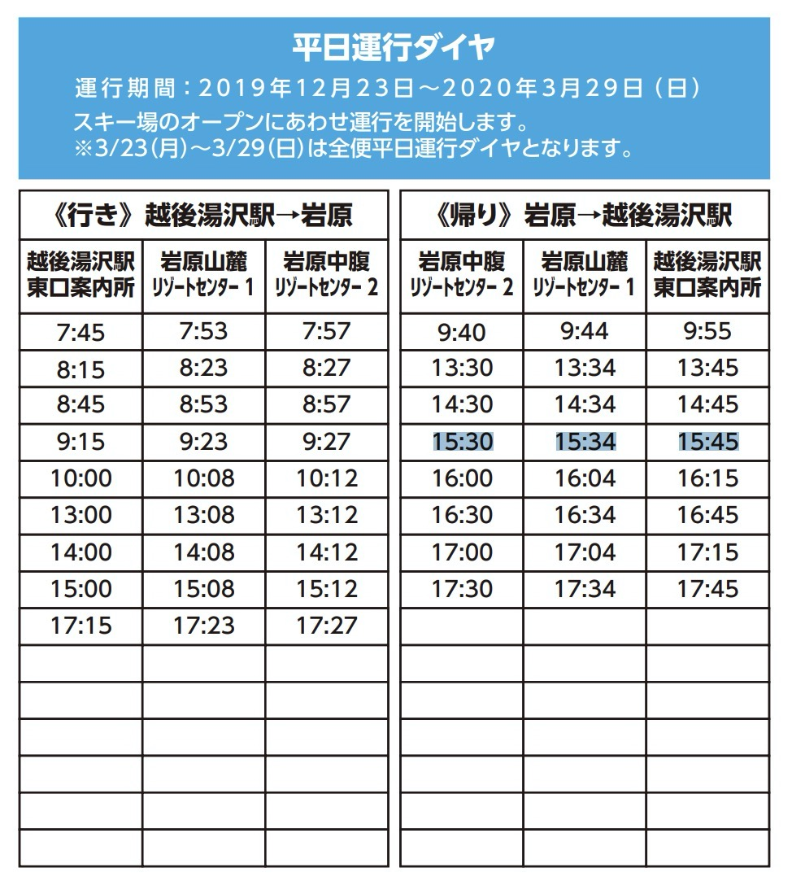
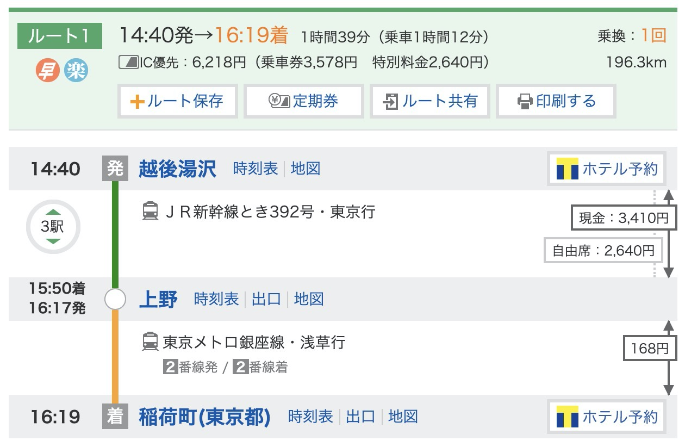
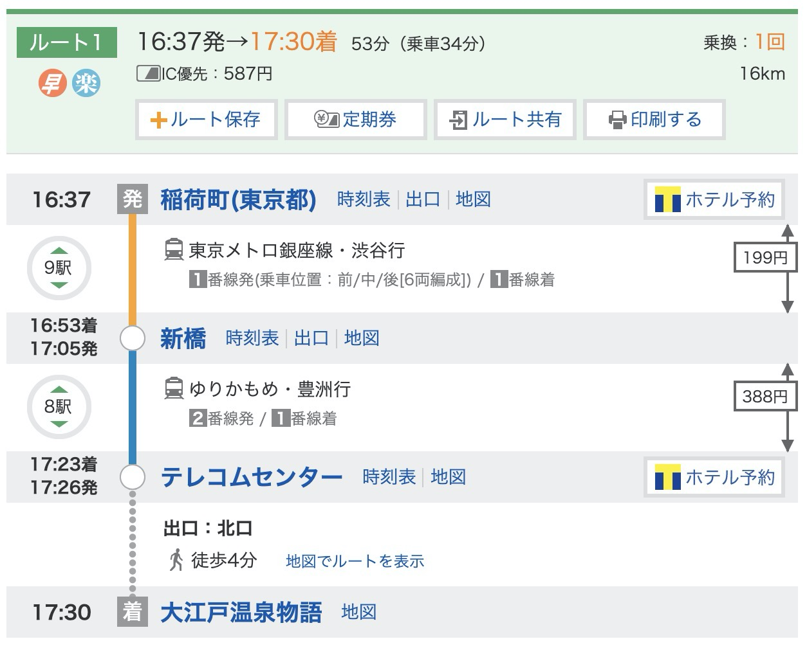
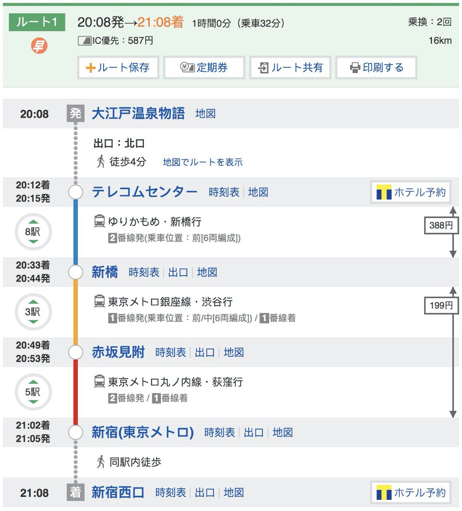
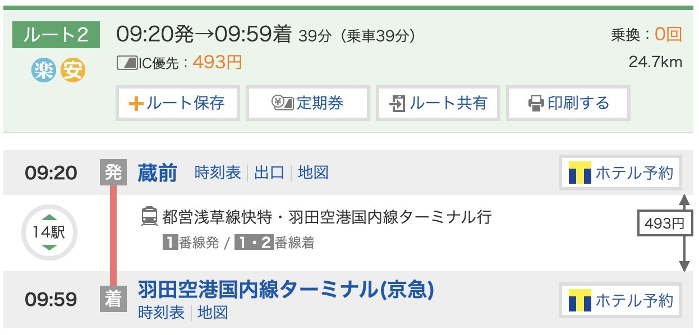
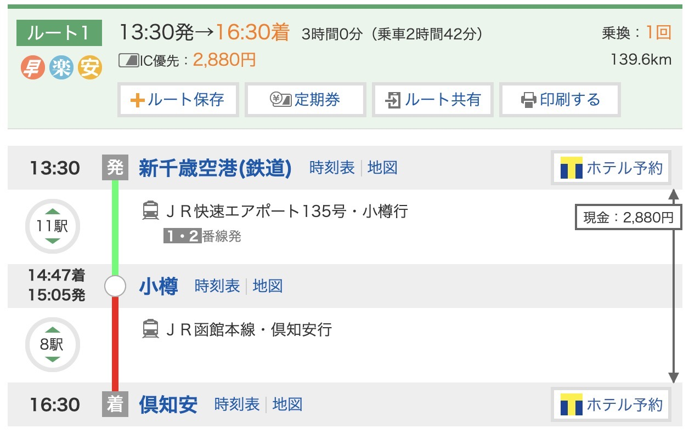
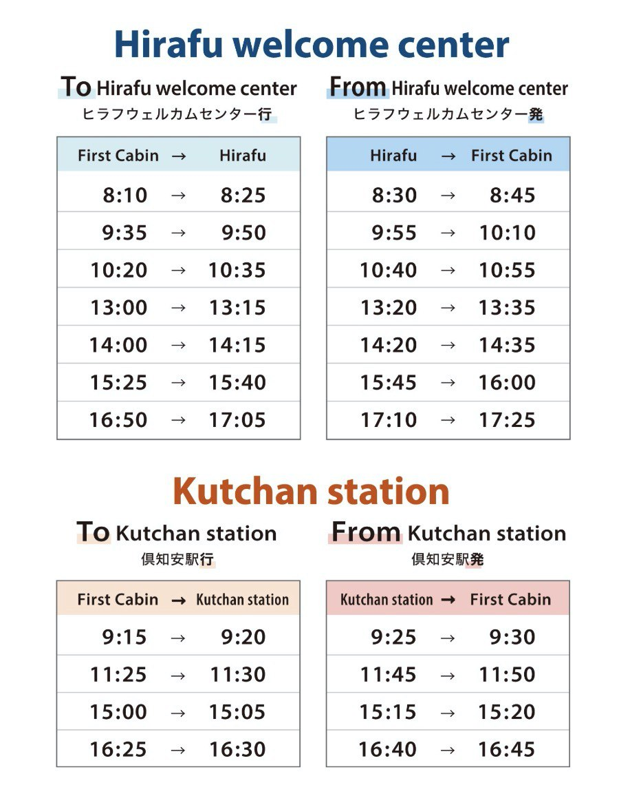
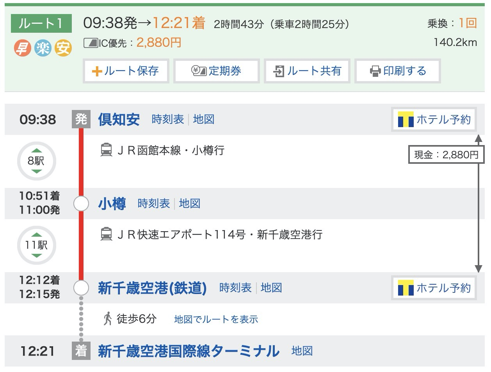

2/25
- 11:55 - 16:00 樂桃航空 (桃機一航)
- 16:00 - 17:30 走到成田二航 買UNIQLO
- 17:30 成田二航1樓 北口3 室內沙發區集合
2/27
- 08:00 - 15:30 岩原大爆摔
- 15:30 - 15:45 從岩原搭乘接駁車到越後湯沢
- 
- 15:45 - 18:47 越後湯沢晚餐+ 喝酒 + 购物
- 18:47 - 19:15 搭乘JR 回上越饭店
2/28
- 07:00 - 08:00 吃早餐 + 放行李
- 08:00 - 12:30 上越開始爆摔
- 13:00 - 13:30 搭接駁車從飯店到越後湯沢
- 13:30 - 14:40 車站喝酒逛街購物
- 14:40 - 16:19 搭新幹線從越後湯沢到稲荷町
- 
- 16:37 - 17:30 從稲荷町到大江戸 (一/4分)
- 
- 17:30 - 20:08 大江戸温泉物語
- 20:08 - 21:08 從大江戸到新宿 (388)
- 
- 21:15 - 23:15 到新宿吃六歌仙燒肉
2/29
- 10:00 - 11:00 退房 + 早餐 + 上野放行李
- 11:00 - 13:00 渋谷 Nintendo Tokyo
- 13:00 - 16:00 浅草
- 18:00 - 19:40 蔵前附近吃晚餐 + 回上野
- 16:20 - 17:01 從上野到成田3航廈 (18:00 關櫃)(高雄)
- 19:40 - 20:21 從上野到成田3航廈 (21:30 關櫃)(桃园)
3/1
- 09:20 - 09:59 蔵前搭都営浅草線急行到羽田2航 (493)
- 
- 11:00 - 12:35 搭ANA到新千歲 (3229)
- 13:30 - 16:30 搭JR到倶知安 (2880)
- 
- 16:40 - 16:45 搭接駁車到飯店
- 
3/2、3/3
- 08:10 - 8:25 搭接駁車到 Hirafu
- 17:10 - 17:25 搭接駁車回飯店
3/4
- 09:15 - 09:20 搭接駁車到倶知安
- 09:38 - 12:21 搭JR到新千歲 (2880)
- 